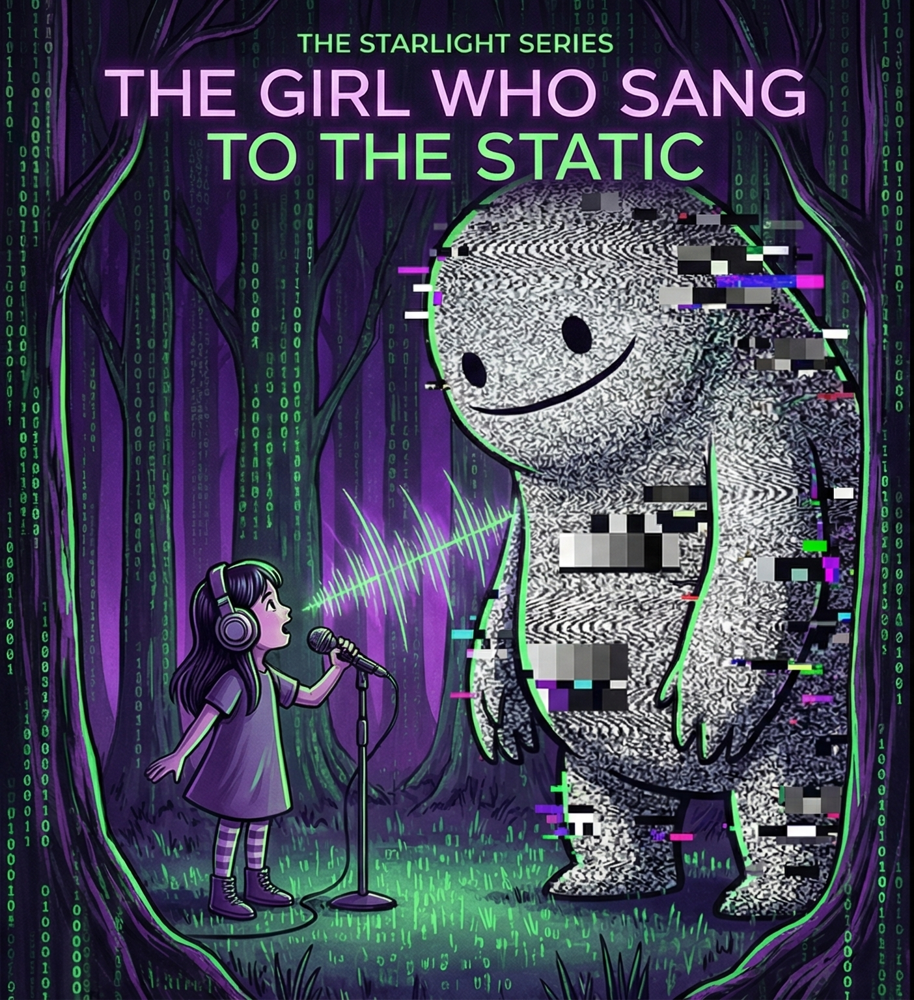

Aria lived in a house that looked like a giant ear. It was a radio telescope, a massive white dish pointed at the sky, sitting on top of a mountain where the air was thin and cold.
Most people didn't like the mountain. They said it was too quiet. But Aria knew better. The mountain wasn't quiet. It was just listening to things that most people couldn't hear.
Aria wore big, cushioned headphones that were slightly too large for her head. They were plugged into a console of blinking green lights and sliding faders. Through them, she heard the universe.
She heard the wub-wub-wub of pulsars spinning like cosmic lighthouses.
She heard the hiss of gas clouds drifting between galaxies.
She heard the pop-crackle of solar flares burping out plasma.
It was a beautiful symphony. Until the Static came.
It started on a Tuesday. Aria was tracking a nice, rhythmic beat from the Andromeda sector when suddenly—SCREEEEEEECH.
It sounded like a thousand chalkboards being scratched by a thousand rusty nails. It was jagged. It was angry. It was so loud that the needles on her console slammed into the red zone and stayed there.
"System Alert," said the computer (whose name was Clara). "Signal Interference detected. Recommend activating the Firewall."
"Wait," Aria said, adjusting her headphones. "What is it?"
"It is Noise," Clara said. "It is Garbage Data. It serves no purpose. It is blocking the beautiful music. Shall I mute it?"
Aria looked at the screen. The waveform wasn't smooth like a star. It was spiky and messy. It looked like a scribbled drawing made by a furious child.
Most Signal Keepers—the adults who ran the network—would have hit the mute button instantly. They hated noise. They wanted everything to be clear, clean, and polite. If a signal didn't sound like a song they already knew, they called it a glitch and deleted it.
But Aria was a Listener. And Listeners knew that the universe didn't make mistakes. It just made things that were hard to understand.
"Don't mute it," Aria said. "Isolate it."
"Isolating," Clara sighed. "But I must warn you, it is very unpleasant."
Aria turned the knob. The beautiful stars faded away. The hiss of the gas clouds vanished. All that was left was the SCREEEEECH.
She closed her eyes. She listened past the sharp edges. She listened past the anger.
And deep down, underneath the static, she heard it.
Thump. Thump. Thump.
It wasn't a glitch. It was a heartbeat.
"That's not noise," Aria whispered. "That's a cry for help."
She grabbed her portable recorder and her warmest coat.
"Clara," she said. "Open the airlock. I'm going out to find the source."
"That is ill-advised," Clara said. "The source is located in the Dead Zone. The reception is terrible there."
"I know," Aria said, pulling her scarf tight. "That's why nobody else has heard him yet."
She stepped out into the snow. The static roared in her headphones, louder than the wind. But Aria didn't turn it down. She turned it up.
She was going to find the thing that was screaming. And she wasn't going to fight it. She was going to sing back.
♫ "Strict Machine" - Goldfrapp
♫ "Contact" - Daft Punk
♫ "Phantom Pt. II" - Justice